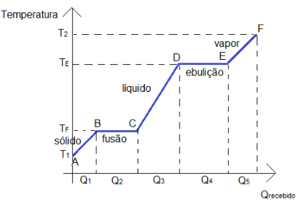
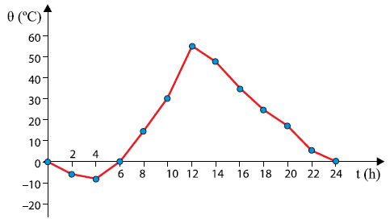

Aula6-41: Calor sensível e calor latente
Quando se transfere calor a uma substância, ela pode usar essa energia para 1) elevar sua temperatura ou 2) mudar de fase. O calor absorvido ou cedido que faz a substância variar de temperatura é chamado de calor sensível (Q1, Q3, Q5), enquanto o calor responsável por convertê-la de um estado físico a outro é chamado de calor latente (Q2, Q4).
Observe no gráfico abaixo a classificação do calor recebido pela substância em questão:
 |
Q1: Calor sensível; |
Calor sensível
Relacionadas ao calor sensível, há duas grandezas físicas cujo entendimento é imprescindível para descrevermos o fenômeno aqui estudado:
➔ CAPACIDADE TÉRMICA (à pressão constante)
Capacidade térmica (ou capacidade calorífica) é a grandeza física que relaciona a quantidade de calor fornecida ou retirada de um corpo com a variação de temperatura dele. Em outras palavras, descreve a quantidade de calor necessária para provocar, em um corpo, uma variação de uma unidade de temperatura.
Em aulas futuras, aprenderemos que é possível variar a temperatura de uma substância mantendo constante a sua pressão ou o seu volume. Neste caso, interessam-nos apenas as variações a pressão constante.
⚛ A unidade de medida para a capacidade térmica, no SI, é o:
, no entanto, usa-se muito o:
Obs.: 1 caloria (cal) = 4,2 joules (J).
➔ CALOR ESPECÍFICO (à pressão constante)
Calor específico é a grandeza física que indica a variação térmica de uma substância ao receber certa quantidade de calor. Também é chamado de capacidade térmica mássica. O calor específico é dado pela fórmula abaixo:
em que C é a capacidade térmica da substância e m é a massa da substância.
⚛ A unidade de medida para calor específico no SI é o:
no entanto, usa-se muito o
|
Substância |
C (cal/g.°C) |
|---|---|
|
Hélio |
1,25 |
|
Água |
1,00 |
|
Gelo |
0,55 |
|
Alumínio |
0,22 |
|
Areia |
0,20 |
|
Vidro |
0,16 |
|
Aço |
0,10 |
|
Ouro |
0,03 |
➔ EQUAÇÃO FUNDAMENTAL DA CALORIMETRIA
Se desenvolvermos a equação do calor específico, obteremos uma equação que fornece a quantidade de calor sensível em função da variação de temperatura de um corpo. Essa equação é chamada de equação fundamental da calorimetria:
VARIAÇÕES DE TEMPERATURA NO DESERTO
Como se observa na tabela acima, a água possui elevado calor específico; em outras palavras, ela não varia de temperatura “facilmente”. Por isso, as regiões do planeta Terra com água em abundância, seja no mar ou na atmosfera, se beneficiam dessa propriedade e têm a variação de temperatura amenizada. Já nos lugares que carecem de água, a variação de temperatura não é amenizada: é, de fato, abrupta. Bons exemplos são os desertos, que costumam ter temperaturas elevadíssimas durante o dia e temperaturas negativas durante a noite.
 |
O gráfico ao lado representa, aproximadamente, como varia a temperatura ambiente no período de um dia, em determinada época do ano, no deserto do Saara. |
Calor latente
Esse calor é a energia responsável pela mudança de estado físico de uma massa de substância. A fórmula que nos dá a quantidade de calor em função da massa convertida é:
, em que
é o calor latente específico.
|
Substância |
Calor latente de fusão (cal/g) |
Calor latente de vaporização (cal/g) |
|---|---|---|
|
Água |
80 |
540 |
|
Álcool |
25 |
204 |
|
Alumínio |
95 |
2500 |
|
Mercúrio |
2,7 |
70 |
|
Chumbo |
6,8 |
200 |
|
Cobre |
65 |
1600 |